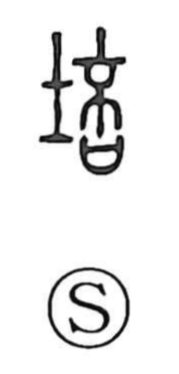

培

Uncategorized
Kun: tsuchikau | On: bai
to cultivate ・ to foster ・ to nurture
Explanation
Shirakawa reads 培 as a phono-semantic character: 土 signals earth and soil, while the phonetic element (shared with 倍) originally depicted a ripened plant pod about to split open—an image tied to breaking open and increase. In 倍 this yields the idea of multiplying; applied to soil in 培, it means to heap and add earth around a plant’s base to encourage growth. From this concrete act comes tsuchikau, “to cultivate, to foster,” both in tending vegetation and, by extension, in bringing things up and helping them grow.